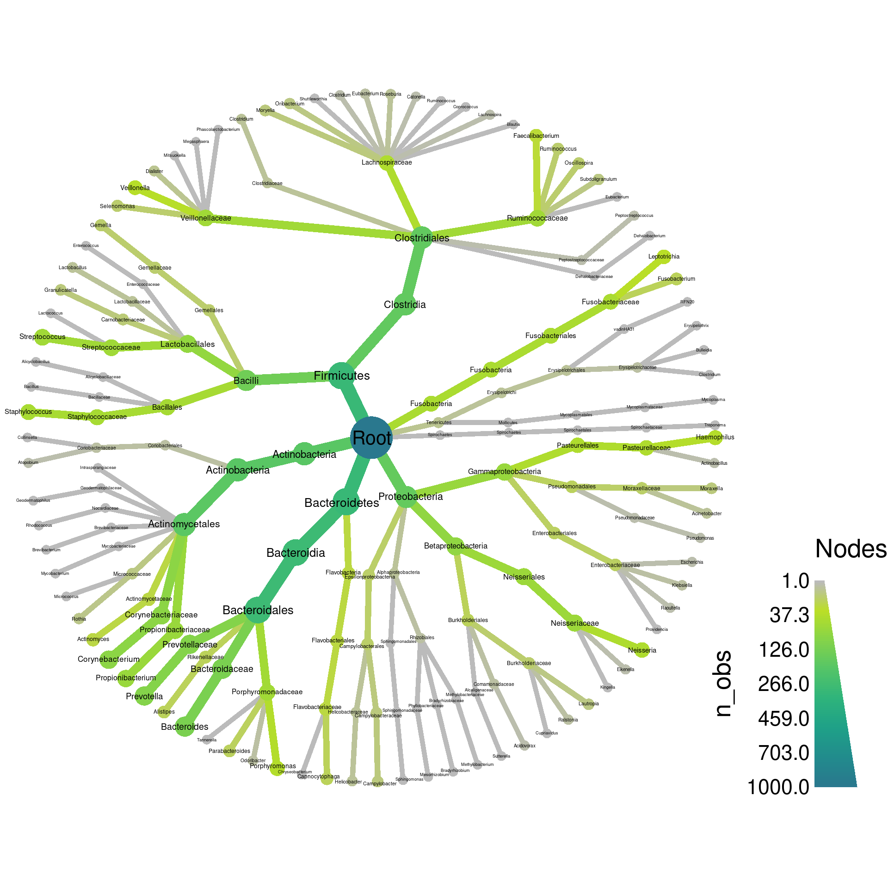

Installing required software
Installing R
R is a computer language that focuses on statistics, data science, and visualization. It can be installed on all common operating systems. R can be downloaded here:
Installing RStudio
RStudio is an “Integrated Development Environment” (IDE) which is a fancy way of saying “text editor with extra programming-related tools”. RStudio makes it easier to use R, but is not needed to use R. Most R users seem to use RStudio, so we are recommending it for this workshop. The main version of RStudio, which is free and open source, can be downloaded here:
Installing the required R packages
In addition to tools included with every R installation, it is common to install R packages, which are sets of tools bundled together in a standardize way, making them easy to install. In fact, most functionality used in R is from R packages, not base R. The following packages are used in this primer. Clicking of their name will lead to documentation (perhaps unofficial) for the package.
- vegan: Implements many standard statistical techniques used in ecological research. Is used extensively by packages like
phyloseqandmetacoder. (Dixon 2003) - metacoder: Manipulation and visualization of taxonomic data, particularly those from amplicon metagenomics research. (Foster, Sharpton, and Grünwald 2017)
- taxa: defines taxonomic classes and functions to manipulate them. The goal is to use these classes as low level fundamental taxonomic classes that other R packages can build on and use. This is used by
metacoder. (Foster, Chamberlain, and Grünwald 2018) - phyloseq: Popular package with tools for analysis and visualization of microbiome data (McMurdie and Holmes 2013).
- ggplot2: Awesome graphing package. (Wickham 2009)
- dplyr: A package for manipulating tabular data with a cohesive and intuitive set of commands. A popular alternative to base R methods. (Wickham and Francois 2015)
- readr: Makes reading tabular data from files easier.
- stringr: Functions for text manipulation.
- agricolae: Used for the design and analysis of experiments, especially plant-related experiments.
- ape: A popular package for DNA sequence analysis and phylogenetics.
We wrote and actively maintain metacoder (Foster, Sharpton, and Grünwald 2017) and taxa (Foster, Chamberlain, and Grünwald 2018) so they are heavily relied upon in this primer.
More R resources useful for microbiome data analysis can be found here:
https://microsud.github.io/Tools-Microbiome-Analysis/
You can enter the following script in the R console to install these packages:
# Install phyloseq from Bioconductor
if (!requireNamespace("BiocManager", quietly = TRUE))
install.packages("BiocManager")
BiocManager::install("phyloseq")
# Install the rest of the packages from CRAN
install.packages(c("vegan", "metacoder", "taxa", "ggplot2", "dplyr", "readr", "stringr", "agricolae", "ape"),
repos = "http://cran.rstudio.com",
dependencies = TRUE)If the installation does not work, try installing the packages one at a time (e.g., install.packages("taxa")) and look for error messages. Usually the problem is that there is a non-R dependency that needs to be installed and how you install it will depend on your operating system. Copying the error messages into Google will usually help you figure it out. If a package has installed correctly, you should be able to load it with library (e.g., library(phyloseq)).
You can test if the software is installed correctly by opening RStudio and running the following code. Look at the appendices if you need help using R or RStudio.
library(metacoder)
x = parse_tax_data(hmp_otus, class_cols = "lineage", class_sep = ";",
class_key = c(tax_rank = "info", tax_name = "taxon_name"),
class_regex = "^(.+)__(.+)$")
heat_tree(x, node_label = taxon_names, node_size = n_obs, node_color = n_obs)
If you see the above graph, then congratulations! You should now be all set for using R in this workshop. If you do not see the graph, then email us the result of the following code to help us troubleshoot the problem.
References
Dixon, Philip. 2003. “VEGAN, a Package of R Functions for Community Ecology.” Journal of Vegetation Science 14 (6). BioOne: 927–30.
Foster, Zachary SL, Scott Chamberlain, and Niklaus J Grünwald. 2018. “Taxa: An R Package Implementing Data Standards and Methods for Taxonomic Data.” F1000Research 7 (272). https://doi.org/10.12688/f1000research.14013.1.
Foster, Zachary SL, Thomas J Sharpton, and Niklaus J Grünwald. 2017. “Metacoder: An R Package for Visualization and Manipulation of Community Taxonomic Diversity Data.” PLoS Computational Biology 13 (2). Public Library of Science: e1005404. https://doi.org/10.1371/journal.pcbi.1005404.
McMurdie, Paul J, and Susan Holmes. 2013. “Phyloseq: An R Package for Reproducible Interactive Analysis and Graphics of Microbiome Census Data.” PloS One 8 (4). Public Library of Science: e61217. https://doi.org/10.1371/journal.pone.0061217.
Wickham, Hadley. 2009. Ggplot2: Elegant Graphics for Data Analysis. Springer-Verlag New York. http://ggplot2.org.
Wickham, Hadley, and Romain Francois. 2015. “Dplyr: A Grammar of Data Manipulation.” R Package Version 0.4 3.